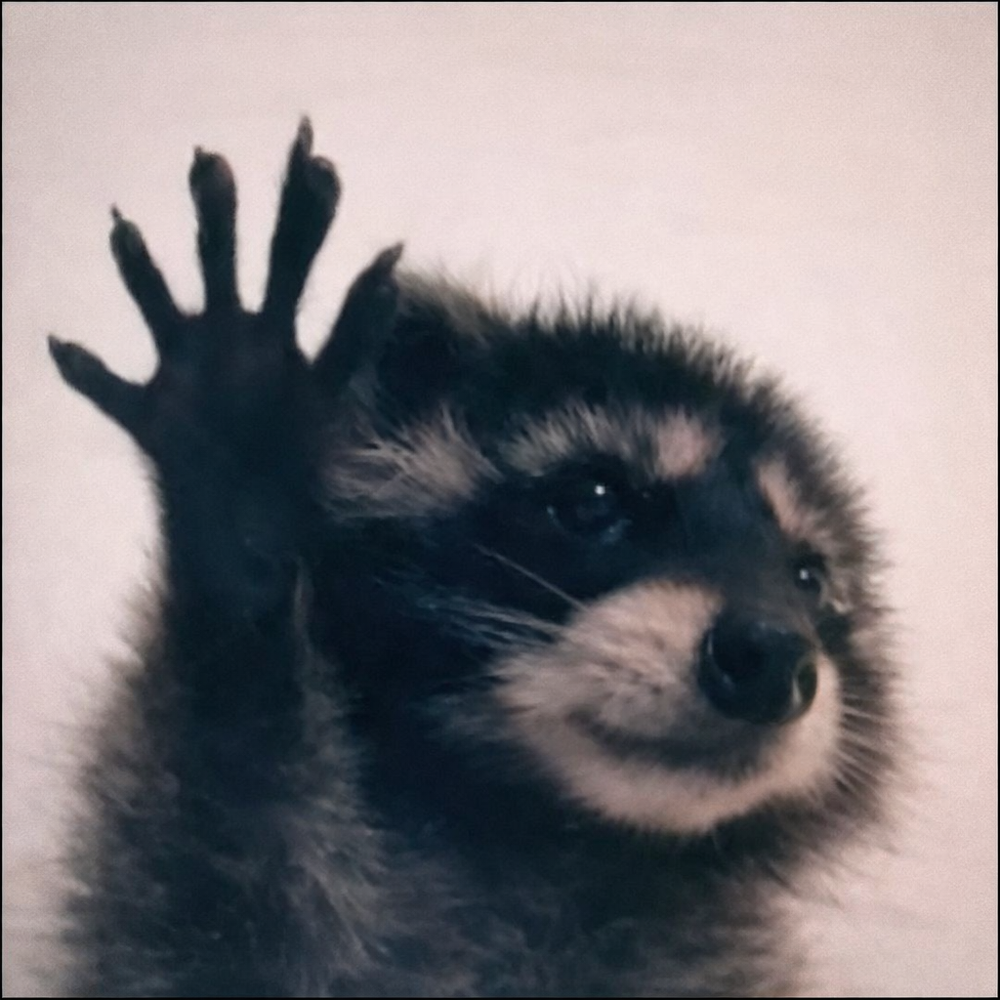

Gato Verdadeiro

Ficha Técnica:
Nome: Gato Verdadeiro
Nomes alternativos: Gato de Verdade, Gato Real
Raça: Gato
Tipo da raça: Gato
Nivel de ameaça: Baixo
Características físicas:
- Gato levemente diferente de outros gatos comuns
- Pelagem cinza com listras pretas e manchas ao redor dos olhos
- Gosta de mexer em lixo humano
- Possui pequenas mãos
- Consegue se mover em duas patas por um curto período
Capacidades:
- Capacidade de comunicação com linguagem humana
- Ele fala apenas a verdade
- Pode firmar promessas normais e de dedinho
Fraquezas:
- Não precisamos de fraquezas. Ele nunca iria ser uma ameaça para nós. Ele prometeu. De dedinho.
Como contê-lo:
Não precisamos o conter. Quando pedimos para ele ficar quietinho, ele sempre concorda caso dermos comida. Ele prometeu pra gente que seria um bom gato.
Relato do Agente Vampiro:
O Agente Vampiro é o agente responsável por encontrar esse gato. Ele foi encontrado em um parque e foi levado para a M.I.A.U..
"Eu estava em um piquenique quando ele apareceu. Ele pediu algumas migalhas, mas nós ficamos com dó e demos um pão. Então ele sentou com a gente e contou que seus pais o abandonaram a 50 anos atrás e desde então ele vaga por ai sozinho. Como não podemos deixar uma criança na rua, o trouxemos para a M.I.A.U.. As pessoas desconfiaram dele, mas ele jurou de dedinho que é um gato. Desde então todos cuidamos dele
- Agente Vampiro
Variações:
Segundo ele, ele é o último de sua linhagem. Mas todos os gatos não paranormais são gatos verdadeiros também, então ele não é único.